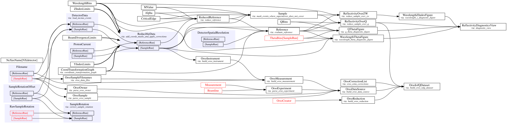
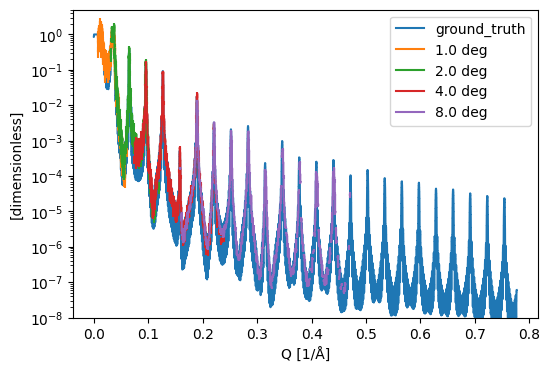
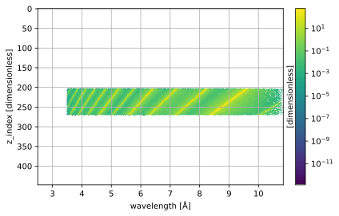
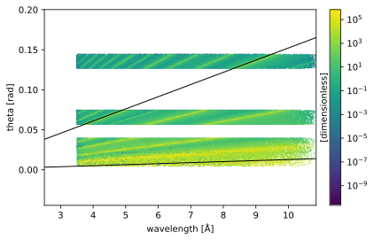
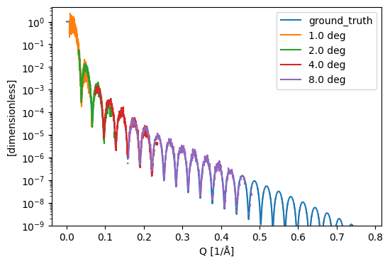
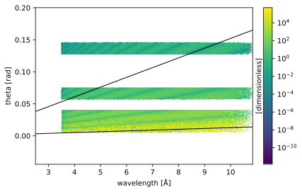
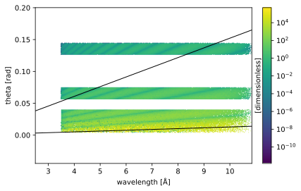
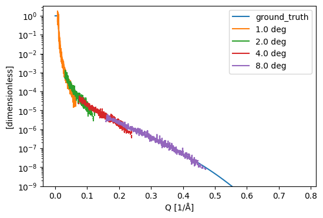
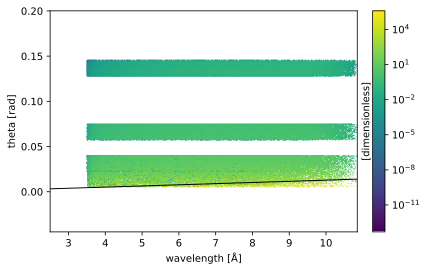
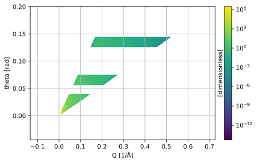

Reduction of ESTIA McStas data#
This notebook demonstrates how to run the data reduction on the output of McStas simulations of the instrument.
Essentially this looks very similar to how one would do data reduction on real data files from the physical instrument, but we replace the default loader with the load_mcstas_events provider.
[1]:
#%matplotlib widget
import scipp as sc
from ess.estia.load import load_mcstas_events
from ess.estia.data import estia_mcstas_example, estia_mcstas_groundtruth
from ess.estia import EstiaMcStasWorkflow
from ess.reflectometry.types import *
from ess.reflectometry.figures import wavelength_z_figure, wavelength_theta_figure, q_theta_figure
The Estia reduction workflow is created and we set parameters such as region of interest, wavelengthbins, and q-bins.
[2]:
wf = EstiaMcStasWorkflow()
wf.insert(load_mcstas_events)
wf[Filename[ReferenceRun]] = estia_mcstas_example('reference')
wf[YIndexLimits] = sc.scalar(35), sc.scalar(64)
wf[ZIndexLimits] = sc.scalar(0), sc.scalar(14 * 32)
wf[BeamDivergenceLimits] = sc.scalar(-0.75, unit='deg'), sc.scalar(0.75, unit='deg')
wf[WavelengthBins] = sc.geomspace('wavelength', 3.5, 12, 2001, unit='angstrom')
wf[QBins] = 1000
# There is no proton current data in the McStas files, here we just add some fake proton current
# data to make the workflow run.
wf[ProtonCurrent[SampleRun]] = sc.DataArray(
sc.array(dims=('time',), values=[]),
coords={'time': sc.array(dims=('time',), values=[], unit='s')})
wf[ProtonCurrent[ReferenceRun]] = sc.DataArray(
sc.array(dims=('time',), values=[]),
coords={'time': sc.array(dims=('time',), values=[], unit='s')})
def compute_reflectivity_curve_for_mcstas_data(wf, results):
R, ref, da = w.compute((ReflectivityOverQ, Reference, ReducibleData[SampleRun])).values()
# In the McStas simulation the reference has quite low intensity.
# To make the reflectivity curve a bit more clean
# we filter out the Q-points where the reference has too large uncertainties.
ref = ref.hist(Q=R.coords['Q'])
too_large_uncertainty_in_reference = sc.stddevs(ref).data > 0.3 * ref.data
R = R.hist()
R.data = sc.where(too_large_uncertainty_in_reference, sc.scalar(float('nan'), unit=R.unit), R.data)
results[f"{da.coords['sample_rotation'].value} {da.coords['sample_rotation'].unit}"] = R
Downloading file 'examples/220573/mccode.h5' from 'https://public.esss.dk/groups/scipp/ess/estia/1/examples/220573/mccode.h5' to '/home/runner/.cache/ess/estia/1'.
[3]:
wf.visualize(graph_attr={'rankdir':"LR"})
[3]:

Ni/Ti multilayer sample#
Below is a comparison between the reflectivity curve obtained using the reduction workflow and the ground truth reflectivity curve that was used in the McStas simulation. The sample was simulated at different sample rotation settings, each settings produces a separate reflectivity curve covering a higher Q-range, and that is the angle in the legend of the figure.
[4]:
results = {}
for path in estia_mcstas_example('Ni/Ti-multilayer'):
w = wf.copy()
w[Filename[SampleRun]] = path
compute_reflectivity_curve_for_mcstas_data(w, results)
ground_truth = estia_mcstas_groundtruth('Ni/Ti-multilayer')
sc.plot({'ground_truth': ground_truth} | results, norm='log', vmin=1e-8)
Downloading file 'examples/220574/mccode.h5' from 'https://public.esss.dk/groups/scipp/ess/estia/1/examples/220574/mccode.h5' to '/home/runner/.cache/ess/estia/1'.
Downloading file 'examples/220575/mccode.h5' from 'https://public.esss.dk/groups/scipp/ess/estia/1/examples/220575/mccode.h5' to '/home/runner/.cache/ess/estia/1'.
Downloading file 'examples/220576/mccode.h5' from 'https://public.esss.dk/groups/scipp/ess/estia/1/examples/220576/mccode.h5' to '/home/runner/.cache/ess/estia/1'.
Downloading file 'examples/220577/mccode.h5' from 'https://public.esss.dk/groups/scipp/ess/estia/1/examples/220577/mccode.h5' to '/home/runner/.cache/ess/estia/1'.
Downloading file 'examples/NiTiML.ref' from 'https://public.esss.dk/groups/scipp/ess/estia/1/examples/NiTiML.ref' to '/home/runner/.cache/ess/estia/1'.
/home/runner/work/essreflectometry/essreflectometry/.tox/docs/lib/python3.10/site-packages/matplotlib/axes/_axes.py:3828: RuntimeWarning: invalid value encountered in add
low, high = dep + np.vstack([-(1 - lolims), 1 - uplims]) * err
[4]:

Below are a number of figures displaying different projections of the measured intensity distribution.
[5]:
results = []
for path in estia_mcstas_example('Ni/Ti-multilayer'):
w = wf.copy()
w[Filename[SampleRun]] = path
results.append(w.compute(Sample))
[6]:
wavelength_z_figure(results[3], wavelength_bins=400)
[6]:

[7]:
wavelength_theta_figure(results, wavelength_bins=400, theta_bins=200, q_edges_to_display=[sc.scalar(0.016, unit='1/angstrom'), sc.scalar(0.19, unit='1/angstrom')])
[7]:

[8]:
q_theta_figure(results, q_bins=300, theta_bins=200)
[8]:
Ni on Silicon#
[9]:
results = {}
for path in estia_mcstas_example('Ni-film on silicon'):
w = wf.copy()
w[Filename[SampleRun]] = path
compute_reflectivity_curve_for_mcstas_data(w, results)
ground_truth = estia_mcstas_groundtruth('Ni-film on silicon')
sc.plot({'ground_truth': ground_truth} | results, norm='log', vmin=1e-9)
Downloading file 'examples/220578/mccode.h5' from 'https://public.esss.dk/groups/scipp/ess/estia/1/examples/220578/mccode.h5' to '/home/runner/.cache/ess/estia/1'.
Downloading file 'examples/220579/mccode.h5' from 'https://public.esss.dk/groups/scipp/ess/estia/1/examples/220579/mccode.h5' to '/home/runner/.cache/ess/estia/1'.
Downloading file 'examples/220580/mccode.h5' from 'https://public.esss.dk/groups/scipp/ess/estia/1/examples/220580/mccode.h5' to '/home/runner/.cache/ess/estia/1'.
Downloading file 'examples/220581/mccode.h5' from 'https://public.esss.dk/groups/scipp/ess/estia/1/examples/220581/mccode.h5' to '/home/runner/.cache/ess/estia/1'.
Downloading file 'examples/Si-Ni.ref' from 'https://public.esss.dk/groups/scipp/ess/estia/1/examples/Si-Ni.ref' to '/home/runner/.cache/ess/estia/1'.
/home/runner/work/essreflectometry/essreflectometry/.tox/docs/lib/python3.10/site-packages/matplotlib/axes/_axes.py:3828: RuntimeWarning: invalid value encountered in add
low, high = dep + np.vstack([-(1 - lolims), 1 - uplims]) * err
[9]:

[10]:
results = []
for path in estia_mcstas_example('Ni-film on silicon'):
w = wf.copy()
w[Filename[SampleRun]] = path
results.append(w.compute(ReducibleData[SampleRun]))
[11]:
wavelength_z_figure(results[3], wavelength_bins=400)
[11]:

[12]:
wavelength_theta_figure(results, wavelength_bins=400, theta_bins=200, q_edges_to_display=[sc.scalar(0.016, unit='1/angstrom'), sc.scalar(0.19, unit='1/angstrom')])
[12]:

[13]:
q_theta_figure(results, q_bins=300, theta_bins=200)
[13]:
SiO2 on Silicon#
[14]:
results = {}
for path in estia_mcstas_example('Natural SiO2 on silicon'):
w = wf.copy()
w[Filename[SampleRun]] = path
compute_reflectivity_curve_for_mcstas_data(w, results)
ground_truth = estia_mcstas_groundtruth('Natural SiO2 on silicon')
sc.plot({'ground_truth': ground_truth} | results, norm='log', vmin=1e-9)
Downloading file 'examples/220582/mccode.h5' from 'https://public.esss.dk/groups/scipp/ess/estia/1/examples/220582/mccode.h5' to '/home/runner/.cache/ess/estia/1'.
Downloading file 'examples/220583/mccode.h5' from 'https://public.esss.dk/groups/scipp/ess/estia/1/examples/220583/mccode.h5' to '/home/runner/.cache/ess/estia/1'.
Downloading file 'examples/220584/mccode.h5' from 'https://public.esss.dk/groups/scipp/ess/estia/1/examples/220584/mccode.h5' to '/home/runner/.cache/ess/estia/1'.
Downloading file 'examples/220585/mccode.h5' from 'https://public.esss.dk/groups/scipp/ess/estia/1/examples/220585/mccode.h5' to '/home/runner/.cache/ess/estia/1'.
Downloading file 'examples/Si-SiO2.ref' from 'https://public.esss.dk/groups/scipp/ess/estia/1/examples/Si-SiO2.ref' to '/home/runner/.cache/ess/estia/1'.
/home/runner/work/essreflectometry/essreflectometry/.tox/docs/lib/python3.10/site-packages/matplotlib/axes/_axes.py:3828: RuntimeWarning: invalid value encountered in add
low, high = dep + np.vstack([-(1 - lolims), 1 - uplims]) * err
[14]:

[15]:
results = []
for path in estia_mcstas_example('Natural SiO2 on silicon'):
w = wf.copy()
w[Filename[SampleRun]] = path
results.append(w.compute(ReducibleData[SampleRun]))
[16]:
wavelength_z_figure(results[3], wavelength_bins=400)
[16]:

[17]:
wavelength_theta_figure(results, wavelength_bins=400, theta_bins=200, q_edges_to_display=[sc.scalar(0.016, unit='1/angstrom')])
[17]:
[18]:
q_theta_figure(results, q_bins=300, theta_bins=200)
[18]:
